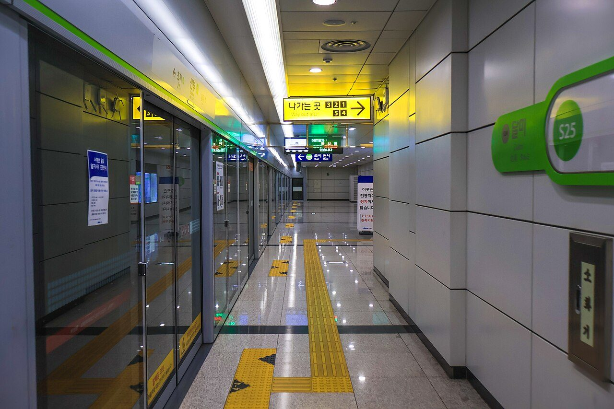
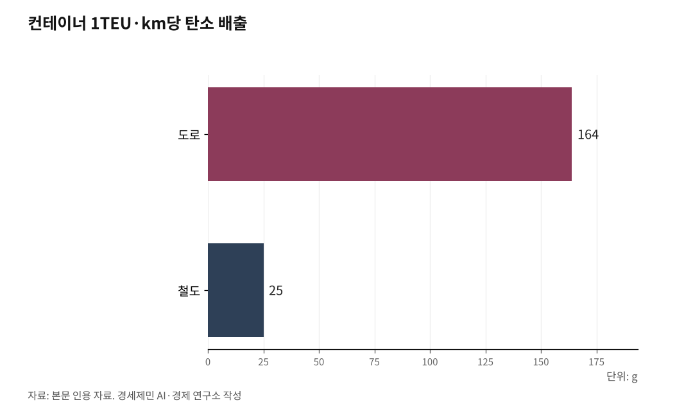

서해안벨트 핵심축 인천발 서해선 KTX [번외편 하]
분기기 두 개와 인입선 하나 — 서해안 900만의 철도가 없다
서해안 8개 도시 917만명, 고속도로는 시속 20km — 도로만으로는 안 된다
로테르담~앤트워프가 보여주는 답, 제5차 국가철도망에 지금 반영해야 한다

1. 서해안 900만, 도로는 이미 포화다
김포·인천·부천·시흥·안산·화성·수원·평택. 서해안 축 8개 도시에 약 917만명(2024년 주민등록 기준)이 산다. 서울 인구에 맞먹는다.
이 도시들을 연결하는 고속도로가 전부 막혀 있다. 제2경인고속도로 남동 나들목은 하루 진출입 차량이 10만대에 이르며 출퇴근 시간 시속 20km 아래로 떨어진다.
서해안고속도로는 주말마다 40km 이상 정체가 반복된다. 수도권제2순환고속도로 12개 구간 가운데 인천~안산 구간(19.8km)만 유일하게 착공조차 되지 않았다.
도로 위에서 승용차와 화물 트럭이 뒤섞인다. 삼성전자 화성·평택캠퍼스, 기아 화성공장, 현대제철 당진, 시화산단, 남동인더스파크가 모두 이 축에 몰려 있다.
공장에 들어가는 원자재·장비·화학소재가 전량 트럭으로 고속도로를 달린다. 도로를 더 깔아도 수요를 감당하지 못하는 구조다.

2. 인천에서 평택까지 직결 철도가 없다
인천과 평택의 직선거리는 약 50km다. 철도로 가려면 수인분당선을 타고 수원까지 간 뒤 1호선으로 환승해 평택까지 내려가야 한다. 100km 가까이 우회한다.
삼성전자 평택캠퍼스는 P1부터 P5까지 합산 투자 규모가 200조원을 넘는다(추정). P1에 32조원, P2에 34조원, P3에 50조원, P5에 60조원이 투입됐다. P5는 2028년 가동을 목표로 한다.
평택시 인구는 현재 약 65만명이다. 경기도가 승인한 2040 도시기본계획에 따르면 목표 인구가 105만4000명이다. 62% 이상 늘어난다.
동부 생활권은 세계 최대 반도체 특화단지로, 서부 생활권은 평택항 기반 항만·산업 중심지로 계획됐다. 이 도시가 인천과 철도로 연결되지 않는다.
3. 화물열차는 이미 달리고 있다
서해선과 평택선은 2024년 11월 2일 동시 개통했다. 개통과 함께 화물열차가 달리기 시작했다.
안중역에서 울산 태화강역까지 철강 화물열차가 하루 상하행 각 1회 오간다. 안중역에서 부산진역·부산신항역까지 컨테이너 화물열차가 하루 상하행 각 2회 운행한다.
현대제철과 코레일은 안중역을 철강재 운송 기지로 활용하기 위한 협약을 체결했다. 서해선 전체로 보면 하루 화물열차가 왕복 6회 다닌다.
서화성 컨테이너야적장(CY)은 4만8000㎡ 규모로 2025년 6월 영업을 개시했다. 부산신항행 컨테이너 열차를 하루 왕복 2회 운행하며, 연간 6만TEU 처리를 기대한다.
서해안 화물 축의 뼈대는 깔렸다. 상편에서 다룬 시흥시청역 상하행 직결과 안중역 하행 직결, 인천신항 인입선만 추가하면 이 뼈대가 전국 화물망으로 연결된다.
[사진·슬라이드2] 도로→철도 전환의 경제적 효익과 환경적 가치. 도로 화물차 TEU당 85만원 대비 화물 KTX 50만원으로 30~40% 절감된다. 탄소 배출은 도로 164g/TEU·km 대비 철도 25g으로 85% 감축된다. 연간 경제적 효과 약 5500억원(추정). (퍼플렉시티 종합보고서 기반 인포그래픽)
4. 로테르담~앤트워프, 해안 축 항만을 철도로 잇다
유럽에 답이 있다.
라인-알파인 화물철도 회랑(Rhine-Alpine Rail Freight Corridor)은 네덜란드 로테르담항과 벨기에 앤트워프항에서 출발해 독일 라인-루르 산업지대를 거쳐 이탈리아 제노바항까지 이어진다. 유럽에서 가장 많은 화물 수송량을 처리하는 남북 축이다.
로테르담, 앤트워프, 뒤스부르크, 쾰른, 프랑크푸르트, 바젤, 밀라노, 제노바를 철도 한 줄이 꿰뚫는다.
로테르담항에서 화물을 실은 열차는 3시간 안에 독일 국경을 넘는다. 24시간 안에 유럽 주요 도시에 닿는다. 항만 안에서 50개 기업이 본선 철도에 연결돼 있다.
핵심은 베튀베선(Betuwe Line)이다. 로테르담항과 독일 국경을 잇는 160km 길이의 화물전용 복선 철도로, 47억유로(약 7조500억원)가 투입됐다.
인천신항 인입선(13.2km)이 인천항과 국내 철도망을 잇는 한국판 베튀베선이다.
구조가 같다. 로테르담~앤트워프(약 100km, 북해 해안 축 항만 연결)와 인천신항~평택항(약 70km, 서해안 축 항만 연결). 해안을 따라 항만과 산업단지를 철도로 직결하는 모델이다.
다만 베튀베선도 완벽하지는 않다. 독일 측 연결 구간 공사가 지연되면서 2024년 열차 운행이 전년 대비 5.76% 줄었다. 인프라 확충이 늦어지면 물동량이 줄어든다는 것을 보여준다.
[사진·슬라이드3] 마지막 13.2km, 전국 철도물류망 완성의 열쇠. 월곶→인천신항 단절구간과 3대 정책 과제를 보여준다. [01] 제5차 국가철도망 구축계획 우선 반영(인천신항선 약 5000억원), [02] 서해선-경부고속선 연결선(7.35km) 조기 착공, [03] 민간 철도물류 생태계 조성. (퍼플렉시티 종합보고서 기반 인포그래픽)
5. 제5차 국가철도망, 지금 반영해야 한다
시흥시청역 상하행 직결, 안중역 하행 직결, 인천신항 인입선. 이 세 가지가 서해안벨트 철도 인프라의 핵심이다.
제5차 국가철도망 구축계획(2026~2035)은 2026년 7월 발표될 예정이다. 국토교통부 장관이 2026년 1월 13일 업무보고에서 이 일정을 밝혔다. 인천시는 이미 인천신항 인입선과 제2공항철도를 우선 사업으로 건의했다.
세 가지가 완성되면 부산신항에서 인천신항까지 서해안을 따라 직결된다. 경부선 서울 도심 구간을 거치지 않는 제2의 국가 화물 간선이 열린다.
서해안벨트 900만명의 여객은 서해선 KTX로, 화물은 화물열차로 분리된다. 도로 위에서 승용차와 트럭이 뒤섞이는 구조가 풀린다.
환태평양의 부산항과 환황해의 인천항이 하나의 철도로 연결된다. 분기기 두 개와 인입선 하나가 바꾸는 것은 서해안의 출퇴근만이 아니다. 대한민국 공급망의 구조가 바뀐다.
※ 이 기사는 AI 프로그램 클로드를 활용해 작성했습니다.
참고문헌
· "반도체의 힘…평택, 젊어지고 경제 규모 커졌다", 아시아경제, 2023.8.28., https://www.asiae.co.kr/article/2023082809204774572
· "60조 쏟아붓는 삼성전자 평택 5공장", 뉴데일리, 2025.11.17., https://biz.newdaily.co.kr/site/data/html/2025/11/17/2025111700242.html
· "평택시, 인구 105만 산업도시로 키운다…반도체·항만 중심 성장", 머니투데이, 2026.3.12., https://www.mt.co.kr/policy/2026/03/12/2026031211230552833
· "한국철도,'서화성역 물류시설' 영업 개시", 한국NGO신문, 2025.6.24., https://www.ngonews.kr/news/articleView.html?idxno=208815
· "안중역", 나무위키, 2026.3.30. 접속, https://namu.wiki/w/안중역
· "About us — Corridor Rhine-Alpine", 라인-알파인 화물철도 회랑 홈페이지, 2026.3.30. 접속, https://www.corridor-rhine-alpine.eu/about-us.html
· "Rail transport", 로테르담항 홈페이지, 2026.3.30. 접속, https://www.portofrotterdam.com/en/logistics/connections/intermodal-transportation/rail-transport
· "5차 국가철도망 발표 올 7월에나···대장홍대선 청라 연장 철도 핫클릭", 인천투데이, 2026.1.21., https://www.incheontoday.com/news/articleView.html?idxno=314298
· "Betuwe Line rail freight modal split and German connection issues", UIRR, 2024.11.14., https://www.uirr.com/web-news/80-weeks-over-10-years-german-connection-netherlands-wont-be-ready-long-shot
사진 출처
· [대표사진] LandAndTree, "Seonbu Station Seohae Line Platform 20250101.jpg", 위키미디어 공용, CC0, https://commons.wikimedia.org/wiki/File:Seonbu_Station_Seohae_Line_Platform_20250101.jpg
※ 이 기사는 인공지능을 활용해 작성했습니다.
관련기사
저작권자 © AI경세제민 무단전재 및 재배포, AI학습 및 활용 금지